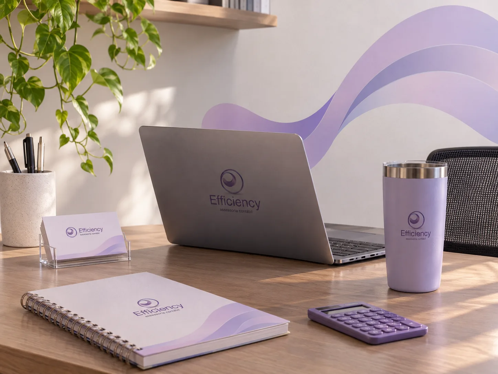
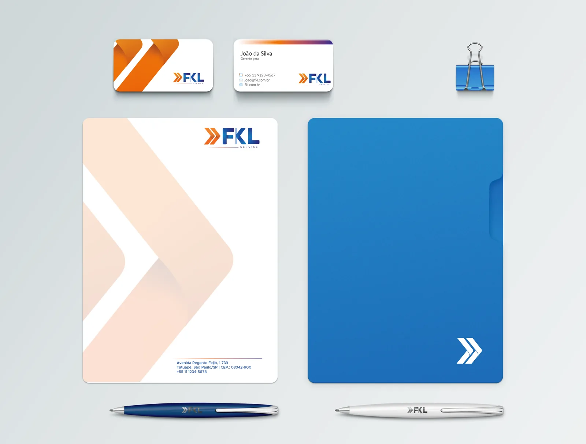
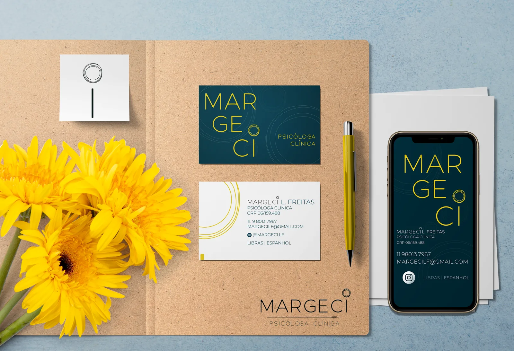
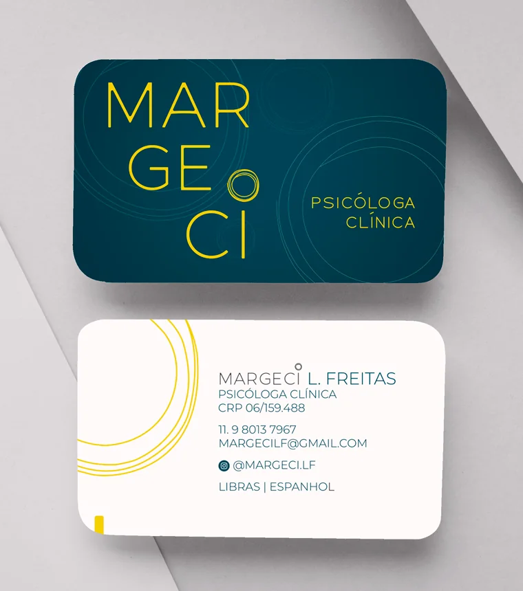
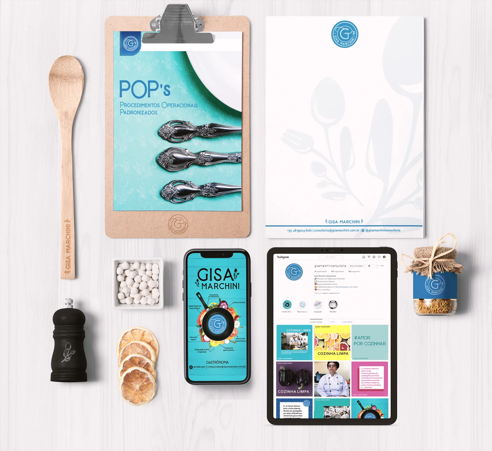
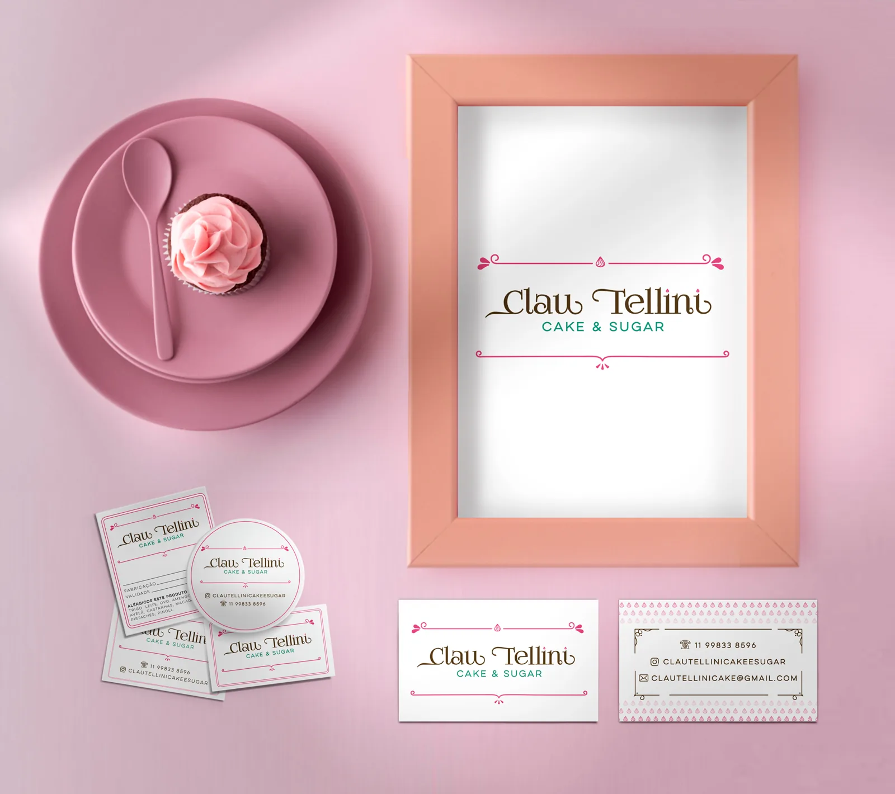
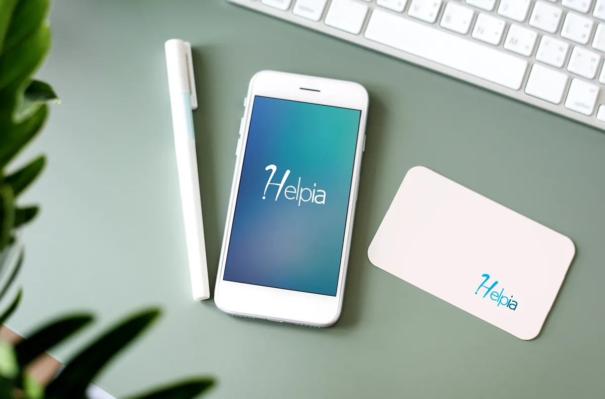
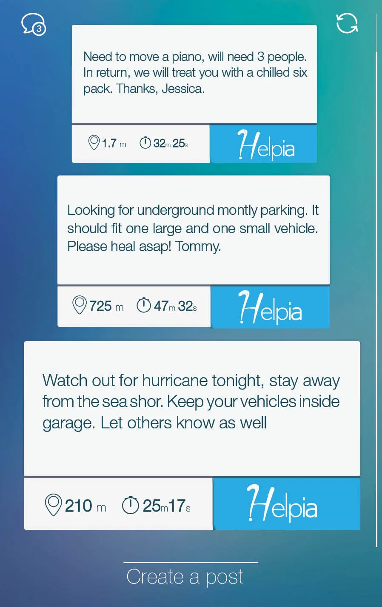
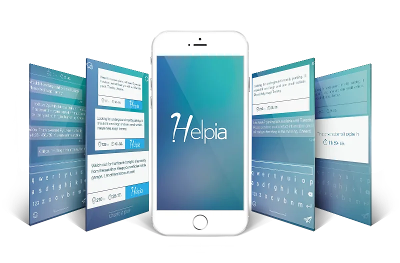

Visual identityIdentidade visual
The most important part of the process is listening to the client, so the brand represents them.A parte mais importante do processo é ouvir o cliente, para que a marca o represente.
Brand development for professionals and small businesses. Six stories, six starting points, each one built from something people already recognize.Desenvolvimento de marcas para profissionais e pequenos negócios. Seis histórias, seis pontos de partida, cada um construído a partir de algo que as pessoas já reconhecem.
Efficiency
Fluid. Light. Modern. Colorful. Feminine. Humanized.Fluido. Leve. Moderno. Colorido. Feminino. Humanizado.
The check mark is the Brazilian version of the tick used since Ancient Rome, when people marked items on lists with a V, from the Latin veritas, “truth”. It means “yes”: yes, this was verified; yes, this is the right answer.O sinal de “certo” é a versão abrasileirada do visto utilizado desde a Roma Antiga, quando as pessoas marcavam itens nas listas com uma letra V, de veritas, “verdade” em latim. Indica o “sim”: sim, isto foi verificado; sim, esta é a resposta correta.

FKLService
Used since cave paintings, the arrow is a graphic symbol recognized by different peoples and cultures.Utilizada desde pinturas rupestres, a seta é um símbolo gráfico reconhecido por diferentes povos e culturas.
Present in countless everyday situations, this powerful symbol also indicates movement: backwards to the left, forwards to the right.Presente nas mais diversas situações cotidianas, este poderoso símbolo também indica movimento: para a esquerda, trás; para a direita, à frente.

Margeci
At certain moments, thoughts and feelings mix until they become a tangle, with no clarity, beginning or end. But it is possible to unwind that thread.Em certos momentos, pensamentos e sentimentos misturam-se até se tornar um emaranhado, sem clareza, começo ou fim. Mas é possível desenrolar esse fio.
The circle has many meanings: eye, movement, expansion, completeness, protection. For Hindus and Buddhists it is also the cycle of life: being born, dying and being reborn. The zen circle, made of concentric circles, stands for the path to perfection.O círculo tem vários significados: olho, movimento, expansão, completude, proteção. Para hindus e budistas é também o ciclo da vida: nascer, morrer e renascer. O círculo zen, composto de círculos concêntricos, representa o caminho para a perfeição.


GisaMarchini
It is on the plate that the chef presents a masterpiece, the fruit of the work of a team that works “redondinha”, in a perfect circle, to offer the best service.É no prato que o chef nos apresenta sua obra-prima, fruto do trabalho de uma equipe que trabalha “redondinha” para oferecer o melhor serviço.
The circle is one of the oldest geometric shapes known. It appears in nature and astronomy, and in many cultures it stands for human evolution, eternity, perfection and wholeness. Circles move freely, they are fluid, and they offer security, connection and community. We have circles of friends, and we sit at a round table to share food.O círculo é uma das formas geométricas mais antigas que se tem notícia. Está na natureza, na astronomia e, em muitas culturas, representa a evolução humana, a eternidade, a perfeição e a plenitude. Círculos têm livre circulação, são fluidos e oferecem segurança, conexão e comunidade. Temos círculos de amigos e nos sentamos à mesa redonda para partilhar o alimento.

ClauTellini
The meringue drop is the detail that can travel through the materials. It never replaces the mark.A gota de suspiro é o detalhe que pode viajar pelos materiais. Ela nunca substitui a marca.
A hand-lettered wordmark in brown, “Cake & Sugar” in green, and pink flourishes that close at the ends in a swirl. The mark comes in color, positive and negative versions, plus a reduced version without the flourishes.Um logotipo manuscrito em marrom, “Cake & Sugar” em verde e filetes rosa que terminam em um floreio. A marca tem versões colorida, positiva e negativa, além de uma versão reduzida, sem os filetes.

Helpia
The app for asking for helpO app para pedir ajuda
Question + answer + the H of the name.Pergunta + resposta + o H do nome.
A question mark and an exclamation mark, the doubt and the answer, merge into the H of the name.Um ponto de interrogação e um de exclamação, a dúvida e a resposta, se fundem no H do nome.



Also in the portfolioTambém no portfólio
Editora Gota · Trote Solidário · identities for Faculdade Sumaré initiatives · identities for Unifesp courses (teacher training, Saúde Indígena) · identities for the São Paulo City Council (Câmara Municipal de São Paulo) · Suelen MagalhãesEditora Gota · Trote Solidário · identidades de ações da Faculdade Sumaré · identidades de cursos da Unifesp (formação de docentes, Saúde Indígena) · identidades da Câmara Municipal de São Paulo · Suelen Magalhães